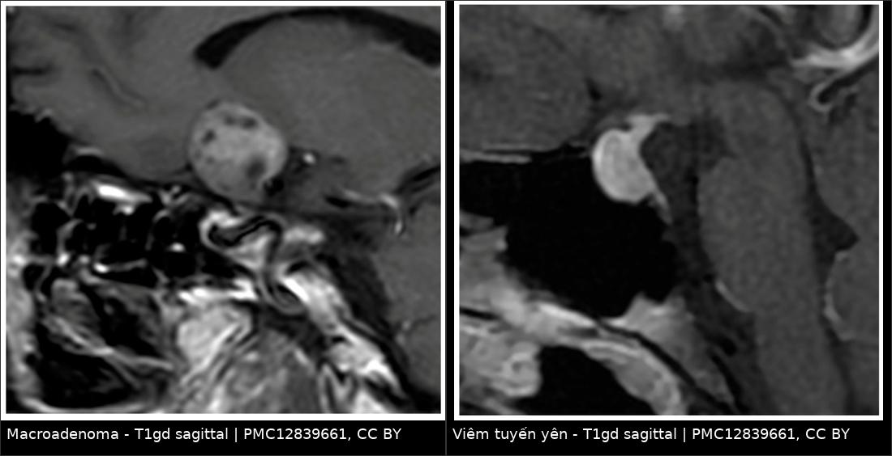
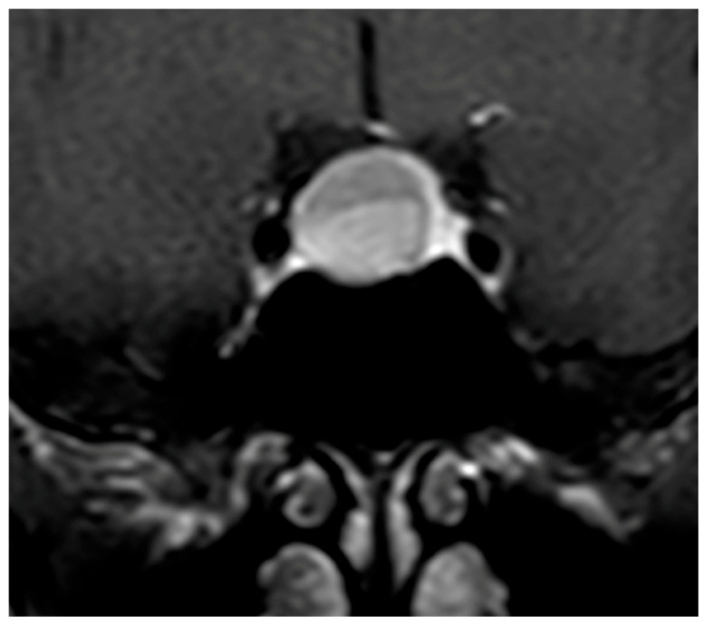
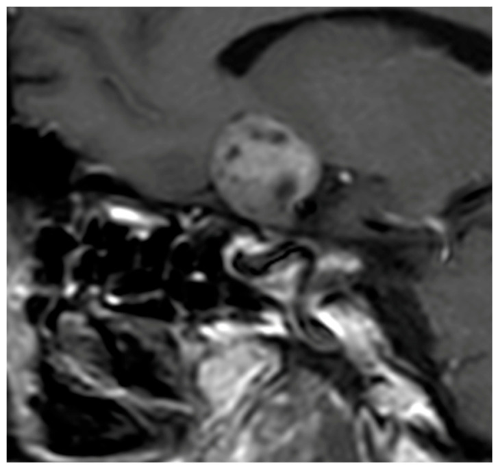

1675 — Vô kinh trung ương trên MRI tuyến yên / Hypogonadotropic amenorrhea on pituitary MRI
Tags: pattern:vo-kinh pattern:khong-khoi-ho-yen pattern:khong-dong-deu-tuyen-yen pattern:day-cuong-tuyen-yen pattern:empty-sella vung:ho-yen vung:tuyen-yen protocol:MRI-tuyen-yen protocol:MRI-dong-hoc score:Gutenberg score:Wright incidentaloma:u-tuyen-yen
Mức chắc chắn (certainty): tổng hợp y văn (literature synthesis) — ghép 1 tổng quan so sánh viêm tuyến yên vs macroadenoma không chức năng (Diagnostics 2026, PMC12839661, CC BY 4.0), 1 đoàn hệ 167 nữ tăng prolactin (Medicine 2025, PMC11730409, CC BY-NC 4.0), 1 nghiên cứu về MRI "quá sớm" trong tăng prolactin nhẹ (PLoS One 2026, PMC13061191, CC BY 4.0), 1 ca Sheehan cấp có chuỗi MRI theo ngày (JCEM Case Rep 2025, PMC12246542, CC BY 4.0). Không có thử nghiệm ngẫu nhiên về ngưỡng prolactin để chụp MRI.
Câu chốt: vô kinh trung ương (FSH/LH thấp, estradiol thấp) là một hội chứng, không phải một bệnh — và câu hỏi hình ảnh duy nhất là: "có khối trong hố yên chèn ép trục hạ đồi–tuyến yên, hay tuyến yên bình thường/teo?". Ba quyết định mà MRI thay đổi: (1) u tiết prolactin (điều trị thuốc, không mổ); (2) viêm tuyến yên (corticoid, tránh mổ); (3) tuyến yên "không có gì" → vô kinh do chức năng, không mổ, không chụp lại vô hạn. Nghịch lý thực hành: chụp MRI quá sớm ở tăng prolactin nhẹ tạo ra 20,6% "vi tuyến yên" tình cờ không liên quan đến triệu chứng — tức hình ảnh tự sinh ra bệnh.
1. Tổng quan bệnh học – cơ chế hình ảnh
1.1 Trục hạ đồi – tuyến yên – buồng trứng: mất xung GnRH thì mất kinh
- Sinh lý: GnRH từ hạ đồi phóng theo xung → tế bào gonadotroph tuyến yên tiết LH/FSH theo xung → nang noãn phát triển và tiết estradiol. Mất xung GnRH (do stress, giảm cân, tập luyện quá mức, tăng prolactin, tổn thương hạ đồi–cuống tuyến yên) → LH/FSH thấp, estradiol thấp, FSH không tăng bù → vô kinh trung ương (hypogonadotropic). Đây là điểm phân biệt cốt lõi với suy buồng trứng (POI): POI có FSH tăng cao, vô kinh trung ương có FSH thấp/bình thường thấp.
- Vì sao prolactin gây vô kinh: prolactin cao ức chế GnRH ở hạ đồi (giảm xung) và ức chế trực tiếp tiết gonadotropin → vô kinh + tiết sữa. Vì vậy tăng prolactin nhẹ có thể chỉ là "hiệu ứng cuống" (stalk effect) do bất kỳ khối nào chèn cuống, không phải u tiết prolactin.
- Nguyên nhân theo tần suất thực hành (từ dữ liệu bài nguồn):
- Vô kinh do chức năng (functional hypothalamic amenorrhea) — chẩn đoán loại trừ, MRI bình thường; đây là nguyên nhân thường gặp nhất ở nữ trẻ có vô kinh trung ương (nhận định thực hành, suy luận).
- Tăng prolactin / u tiết prolactin: prolactinoma chiếm ~40% u tuyến yên có chức năng (PMC11730409).
- Viêm tuyến yên: < 1% mọi tổn thương tuyến yên và 0,5% ca suy tuyến yên (PMC12839661).
- Hội chứng Sheehan (nhồi máu tuyến yên sau băng huyết sau sinh) — nguyên nhân vô kinh + mất sữa sau sinh.
- Empty sella (nguyên phát/thứ phát) — 2–35% tuỳ định nghĩa, tới 79% là tình cờ (PMC11940325 dẫn trong bài 1675 phần nguồn).
- Nguyên nhân thâm nhiễm/u khác: sarcoid, lao, hemochromatosis, craniopharyngioma, u tế bào mầm, di căn.
1.2 TẠI SAO hình ảnh trông như vậy — vật lý + mô bệnh
| Cấu trúc / dấu hiệu | Vì sao có tín hiệu đó | Hệ quả thực hành |
|---|---|---|
| Chấm sáng thùy sau trên T1 (posterior pituitary bright spot) | Túi tiết thần kinh (neurosecretory vesicles) chứa vasopressin–neurophysin cô đặc → rút ngắn T1 mạnh | Mất chấm sáng = rối loạn chức năng thùy sau: viêm tuyến yên, đái tháo nhạt trung ương, Sheehan muộn; u tuyến yên thường giữ chấm sáng trừ khi bị chèn ép nhiều |
| Vi tuyến yên (microadenoma < 10 mm) | Mô u không có hàng rào máu–não bình thường, nhưng dòng máu đến khác tuyến lành (u nhận động mạch trực tiếp, tuyến lành nhận hệ cửa) → thì động mạch sớm: u ngấm ÍT hơn tuyến lành, nên nổi lên như ổ giảm ngấm (hypoenhancing) trên nền tuyến ngấm mạnh; thì muộn u ngấm bù | Đây là lý do MRI động học (dynamic) bắt buộc cho vi tuyến yên; trên T1/T2 không tiêm, u chỉ là ổ đẳng tín hiệu — dễ bỏ sót nếu không có thì sớm |
| Macroadenoma | Khối lớn, có thể xuất huyết (T1 sáng), nang/hoại tử (T2 sáng), không đồng nhất | Không đồng nhất + xâm lấn xoang hang + chèn giao thoa thị → nghi macroadenoma hơn viêm tuyến yên |
| Viêm tuyến yên (hypophysitis) | Mô viêm giàu tế bào, ít hoại tử, ít nang → ngấm thuốc ĐỒNG NHẤT và mạnh, T2 đẳng/giảm (chỉ 5–8% T2 tăng, so với 25% ở macroadenoma) | "Tuyến to đối xứng, ngấm đồng nhất, cuống dày đều" là bộ ba của viêm; T2 tăng mạnh nghiêng về u/nang |
| Empty sella | Khoang dưới nhện lấn vào hố yên → dịch não tủy (T1 tối, T2 sáng) chiếm chỗ, tuyến dẹt | Không có khối, không ngấm thuốc bất thường; tuyến dẹt < 3 mm** + dịch chiếm **> 50% thể tích hố yên = empty sella; ≥ 3 mm và < 50% = partial empty sella |
| Sheehan cấp | Nhồi máu thùy trước → phù (T1 giảm, T2 tăng không đồng nhất), thùy sau còn sống nên chấm sáng còn | Chuỗi theo ngày: to + phù → teo → empty sella; mất chấm sáng xuất hiện muộn (ngày 12 ở ca nguồn) |
- Ngưỡng định lượng nằm lòng:
| Đại lượng | Số liệu | Nguồn |
|---|---|---|
| Phân loại u theo kích thước | vi tuyến yên < 10 mm, macroadenoma ≥ 10 mm | PMC12839661 |
| Thể tích tuyến yên: viêm vs macroadenoma không chức năng | 3 cm³ vs 10 cm³; ngưỡng phân biệt ~7 cm³ | PMC12839661 (dẫn Gutenberg 2009) |
| Xác nhận lại bằng 2 loạt khác | viêm 1,45 cm³ vs macroadenoma 7,16 cm³ | PMC12839661 (Ach 2025) |
| T2 tăng tín hiệu | viêm 5–8% vs macroadenoma 25% | PMC12839661 |
| Prolactin — chẩn đoán u tiết prolactin | > 250 µg/L → prolactinoma; > 500 µg/L → macroprolactinoma | PMC11730409 |
| Prolactin — ngưỡng "vùng xám" | 90–200 ng/mL là vùng chồng lấp giữa prolactinoma và macroadenoma không chức năng | PMC11730409 |
| Prolactin bình thường ở nữ | 4,79–23,3 ng/mL | PMC11730409 |
| Tăng prolactin do "hiệu ứng cuống" | tới 38,5% ca macroadenoma không chức năng; viêm tuyến yên 20–37,5%, biên độ thấp hơn u tiết prolactin | PMC12839661 |
| Đoàn hệ 167 nữ tăng prolactin (MRI) | vi tuyến yên 46,1% · macroadenoma 10,2% · bình thường 39,5% · empty sella 4,2%; vô kinh 22,0%; prolactin > 100 ng/mL chỉ 19,2% | PMC11730409 |
| MRI tăng prolactin "quá sớm" (971 phim) | 60,6% bình thường; 39,4% có ≥ 1 bất thường — vi tuyến yên 20,6%, macroadenoma 2,2%, empty sella 1,2%, bất thường khác 4,8% | PMC13061191 |
| Vi tuyến yên không chức năng phát hiện do tăng prolactin thoáng qua | ~10% | PMC13061191 |
| Empty sella | > 50% thể tích hố yên là dịch + tuyến < 3 mm; partial khi tuyến ≥ 3 mm và dịch < 50%; tỉ lệ 2–35% | PMC11940325, PMC12699780 |
| Pituitary incidentaloma | 10,7% (33 nghiên cứu tử thiết), 3,4% (gộp trên MRI) | PMC12602012 |
2. Mẫu hình + chẩn đoán phân biệt theo mẫu hình (gamut)
Chia gamut theo cái nhìn đầu tiên trên MRI, vì đó là thứ tự đọc thật:
- A. Hố yên có KHỐI, prolactin rất cao (> 250 µg/L): prolactinoma (vi thể/macro) — điều trị dopamine agonist, không mổ trừ khi kháng/không dung nạp/chèn ép nặng.
- B. Hố yên có KHỐI, prolactin nhẹ–vừa: macroadenoma không chức năng có hiệu ứng cuống · viêm tuyến yên · craniopharyngioma · Rathke cleft cyst · u màng não hố yên · di căn · u tế bào mầm.
- C. Tuyến yên TO ĐỐI XỨNG + cuống dày + mất chấm sáng: viêm tuyến yên (lymphocytic, IgG4, do thuốc ức chế điểm kiểm soát) — bẫy lớn nhất của mổ nhầm.
- D. Tuyến yên DẸT trong hố yên rỗng: empty sella (nguyên phát: biến thể/tình cờ; thứ phát: sau Sheehan, sau mổ, sau xạ, sau apoplexy).
- E. Tuyến yên teo, không khối, sau sinh khó: Sheehan (mất sữa + vô kinh + suy thượng thận/giáp).
- F. Tuyến yên BÌNH THƯỜNG, FSH/LH thấp: vô kinh do chức năng (stress/giảm cân/tập luyện) · Kallmann (thiếu khứu giác + hành khứu giác/khứu não thiểu sản) · tăng prolactin do thuốc (chống nôn, chống loạn thần) · suy giáp chưa điều trị · bệnh celiac/IBD · tăng áp lực nội sọ.
- G. Thể "hidden": u tiết prolactin rất nhỏ không thấy trên MRI → chẩn đoán dựa vào prolactin cao + không có nguyên nhân khác, theo dõi/hiếm khi cần BIPSS (BIPSS dành cho Cushing, không phải prolactinoma).
3. Bảng so sánh phân biệt (ma trận đối chiếu)
| Thực thể (entity) | Hình ảnh điển hình (MRI theo chuỗi/thì) | Chốt vào (rule-in) | Chốt loại (rule-out) | Gợi ý xác nhận |
|---|---|---|---|---|
| Prolactinoma | Vi thể: ổ giảm ngấm thì động mạch, đẳng T1/đẳng T2, lệch tuyến, không xâm lấn; macro: khối lớn, có thể xuất huyết/nang | Prolactin > 250 µg/L (macro > 500) + khối hố yên | Prolactin < 100 µg/L với khối lớn → không phải prolactinoma thuần (nghĩ hiệu ứng cuống); hoặc prolactin rất cao mà khối rất lớn → phải pha loãng loại hook effect | Prolactin lặp + pha loãng 1:100; dopamine agonist thử; theo dõi thể tích |
| Macroadenoma không chức năng (NFPMA) | Khối ≥ 10 mm, không đồng nhất, T1 sáng nếu xuất huyết, T2 sáng nếu nang; xâm lấn xoang hang, chèn giao thoa thị | Khối lớn + không tăng prolactin đáng kể + khiếm thị trường hai bên thái dương | Tuyến to đối xứng, cuống dày đều, mất chấm sáng, không xâm lấn → nghĩ viêm | Thể tích > 7 cm³ nghiêng NFPMA; nội soi xuyên bướm khi có chỉ định |
| Viêm tuyến yên (lymphocytic/IgG4/do thuốc) | To đối xứng, ngấm ĐỒNG NHẤT mạnh, cuống dày đều (trung tâm), mất chấm sáng T1, "dấu nút chai sâm banh" (champagne cork) khi đội giao thoa; T2 đẳng/giảm | Cuống dày + mất chấm sáng (hai dấu đặc hiệu nhất); đái tháo nhạt + suy ACTH sớm so với kích thước khối | Xâm lấn xoang hang + chèn giao thoa mạnh + T2 tăng → nghi u | Điểm Gutenberg < 0 / Wright ≥ 3 / Ach ≥ 0,5; corticoid thử; tránh mổ mù |
| Sheehan (cấp → muộn) | Cấp: thùy trước to, T1 giảm, T2 tăng không đồng nhất, chấm sáng thùy sau CÒN; muộn: teo/empty sella, mất chấm sáng | Băng huyết sau sinh + mất sữa + vô kinh; MRI có chuỗi thay đổi theo ngày | Chấm sáng còn + thùy trước to ở tuần đầu → chưa loại trừ Sheehan (đúng ca nguồn) | Chuỗi MRI ngày 6 → 12 → 45; cortisol/FT4/ prolactin thấp |
| Empty sella (nguyên phát) | Dịch T1 tối/T2 sáng chiếm > 50% hố yên, tuyến dẹt < 3 mm, cuống giữa, không khối | Tuyến dẹt < 3 mm không thấy khối | Có khối đặc ngấm thuốc trong hố yên → không phải empty sella đơn thuần | So phim cũ; đừng gọi "u" cho phần tuyến dẹt |
| Vô kinh do chức năng (FHA) | Tuyến yên bình thường (có thể hơi nhỏ), không khối, không dày cuống | FSH/LH thấp + estradiol thấp + MRI bình thường + bối cảnh stress/giảm cân/tập luyện | Bất kỳ khối/cuống dày/mất chấm sáng → không còn là FHA thuần | Chẩn đoán loại trừ; theo dõi cân nặng – tâm lý – hồi phục kinh |
| Kallmann | Hành khứu giác/khứu não thiểu sản–không có, tuyến yên bình thường | Mất khứu giác + thiểu sản hành khứu giác | Hành khứu giác bình thường → tìm nguyên nhân khác | MRI lát mỏng qua tấm sàng (coronal T2) |

Ảnh ghép — cùng T1 sau tiêm, sagittal; khác biệt nằm ở độ đồng nhất của ngấm thuốc và hình dạng tuyến. Nguồn: Diagnostics 2026, PMC12839661, CC BY 4.0; ghép bằng tools/make_composite.py (letterbox nền đen, không crop/kéo giãn).
Ba dấu hiệu "đọc sai hay gặp" trên MRI hố yên
- Lệch tuyến ≠ u: tuyến bình thường có thể lệch nhẹ do tư thế; chỉ gọi u khi có ổ tín hiệu/ngấm thuốc khác biệt kèm hiệu ứng khối.
- Cuống dày "đều và ở giữa" = viêm; cuống dày "lệch, không đều" = thường do chèn ép từ khối, không phải viêm cuống nguyên phát.
- Mất chấm sáng là dấu chức năng, không phải dấu khối: gặp trong viêm, đái tháo nhạt, Sheehan — và cả ở người bình thường thoáng qua; nên không dùng một mình để chẩn đoán.
4. Protocol chụp + hệ điểm chuẩn hóa
4.1 Khi nào chụp — và khi nào KHÔNG nên chụp
flowchart TD A[Vô kinh + FSH/LH thấp, estradiol thấp] --> B[Loại trừ thai, thuốc, suy giáp, tăng prolactin do thuốc] B --> C[Đo prolactin 2 lần, cùng buổi sáng, nghỉ 30 phút] C --> D[Prolactin cao] D --> E[Loại trừ macroprolactin bằng PEG; pha loãng nếu khối lớn] E --> F[Prolactin trên 250 µg/L hoặc có cờ đỏ: đau đầu, khiếm thị trường, đái tháo nhạt, suy tuyến yên] F --> G[Chụp MRI tuyến yên có động học] C --> H[Prolactin bình thường] H --> I[FSH/LH thấp + MRI bình thường: nghĩ vô kinh do chức năng] I --> J[Điều trị dinh dưỡng - tâm lý - hormon; chụp lại chỉ khi xuất hiện cờ đỏ]
- Chụp khi: prolactin tăng rõ (ngưỡng thực hành hay dùng > 100 µg/L, và chắc chắn khi > 250 µg/L), hoặc có cờ đỏ: đau đầu mới, khiếm thị trường, đái tháo nhạt, suy tuyến yên, vô kinh kèm tiết sữa kéo dài, hoặc FSH/LH thấp không giải thích được.
- KHÔNG chụp ngay khi: tăng prolactin nhẹ, không triệu chứng, chưa lặp lại và chưa loại trừ macroprolactin. Bằng chứng: trong 971 MRI được chỉ định cho tăng prolactin nhẹ, 60,6% bình thường nhưng 20,6% có "vi tuyến yên" — phần lớn là tình cờ, và ~10% vi tuyến yên không chức năng được phát hiện chính vì tăng prolactin thoáng qua. Tức là chụp sớm tạo ra chẩn đoán không có bệnh.
4.2 Thông số MRI (tối thiểu để không bỏ sót vi tuyến yên)
- Lát mỏng 2–3 mm, FOV nhỏ (16–20 cm), sagittal T1 không tiêm (tìm chấm sáng thùy sau, đánh giá thùy trước), coronal T2 (tìm nang/xuất huyết, hành khứu giác nếu nghi Kallmann), coronal T1 sau tiêm động học nhiều thì (thì sớm ~20–30 giây là thì quyết định với vi tuyến yên).
- Bắt buộc đọc và ghi 6 mục: (1) thể tích/kích thước tuyến; (2) đồng nhất hay không của ngấm thuốc; (3) đối xứng; (4) cuống: độ dày, đều/lệch; (5) chấm sáng thùy sau còn/mất; (6) xâm lấn xoang hang, chèn giao thoa thị.
- Nếu nghi tổn thương ngoài hố yên (cuống dày đơn độc, đái tháo nhạt, u hạ đồi): mở rộng toàn bộ trục hạ đồi–tuyến yên và cân nhắc MRI toàn não.
4.3 Ba điểm chuẩn hóa (dùng khi phân vân viêm vs u)
| Điểm | Thành phần | Ngưỡng | Diễn giải |
|---|---|---|---|
| Gutenberg (2009) | Tuổi ≤ 30 (−1) · liên quan thai kỳ (−4) · thể tích ≥ 6 cm³ (+2) · ngấm vừa/mạnh (−1) · ngấm không đồng nhất (+1) · bất đối xứng (+3) · mất chấm sáng (−2) · cuống to (−5) · niêm mạc xoang bướm dày (+2) | Tổng < 0 → viêm; ≥ 0 → u | Mạnh nhất: cuống to (−5) và liên quan thai kỳ (−4); yếu: niêm mạc xoang bướm |
| Wright (2022) | Đái tháo nhạt (+2) · KHÔNG xâm lấn xoang hang (+2) · cuống dày (+1) · KHÔNG có triệu chứng thị giác (+1) | ≥ 3 → nguy cơ viêm cao | Nhanh, đặc hiệu cao; không có thể tích/chấm sáng → bỏ sót ca không điển hình |
| Ach (2025) | Nữ (+3) · đau đầu (−2) · triệu chứng thị giác (−2) · suy ACTH (+1) · thể tích < 7 cm³ (+0,5) · mất chấm sáng (+0,5) · xâm lấn xoang hang (−0,5) · cuống dày (+4,5) · chèn đường thị giác (−2) | ≥ 0,5 → nguy cơ viêm cao | Cân bằng lâm sàng – nội tiết – hình ảnh; cuống dày nặng ký nhất (+4,5) |

Ảnh — coronal T1 sau tiêm: khối lớn đẩy tuyến lành còn lại sang TRÁI, tuyến lành ngấm mạnh và đồng nhất — dấu hiệu của hiệu ứng khối, không phải viêm toàn tuyến. Nguồn: Diagnostics 2026, PMC12839661, CC BY 4.0 (nguyên bản).
5. Biến thể bình thường và cạm bẫy
- Tuyến yên "to" sau sinh là sinh lý: tuyến tăng thể tích trong thai kỳ và vài tuần sau sinh (tăng sinh tế bào tiết prolactin); đừng đọc là macroadenoma ở phụ nữ đang cho con bú — và cũng đừng bỏ Sheehan chỉ vì tuyến to trong tuần đầu (ca nguồn: ngày 6 tuyến to + phù, ngày 12 giảm, ngày 45 teo).
- Bẫy 1 — "có u trên MRI" ở người tăng prolactin nhẹ: 20,6% ca chụp vì tăng prolactin nhẹ có vi tuyến yên tình cờ; 3,4% người bình thường có incidentaloma trên MRI (10,7% trên tử thiết). Chẩn đoán prolactinoma cần prolactin cao tương xứng, không chỉ "thấy nốt".
- Bẫy 2 — hook effect: khối rất lớn mà prolactin chỉ "vừa" — do kháng thể bão hòa ở nồng độ cực cao (phương pháp cũ) → kết quả thấp giả. Luôn pha loãng huyết thanh khi khối lớn + prolactin không tương xứng; nếu không, bạn sẽ mổ một prolactinoma đáng lẽ chỉ cần cabergoline.
- Bẫy 3 — macroprolactinemia: prolactin gắn IgG (macroprolactin) không có hoạt tính sinh học → tăng prolactin "giả"; kết tủa PEG để loại trừ trước khi chụp. Tương tự, lấy máu do stress tĩnh mạch có thể tăng nhẹ và lặp lại bình thường tới ~1/3 ca.
- Bẫy 4 — gọi "empty sella" là bệnh: tới 79% empty sella là tình cờ; chỉ điều trị khi có suy tuyến yên hoặc tăng áp lực nội sọ. Ngược lại, đừng bỏ qua empty sella thứ phát sau Sheehan/apoplexy ở người có vô kinh + suy thượng thận.
- Bẫy 5 — "MRI bình thường nên không có gì": FHA và u tiết prolactin rất nhỏ đều có MRI gần bình thường; chẩn đoán dựa vào nội tiết + loại trừ, và chụp lại chỉ khi có cờ đỏ.
- Bẫy 6 — thoả mãn tìm kiếm: thấy khối hố yên rồi dừng, bỏ tổn thương hạ đồi/cuống (u tế bào mầm, Langerhans, sarcoid) — nhóm này gây vô kinh + đái tháo nhạt và cần MRI toàn trục + tầm soát toàn thân.
6. Tự lượng giá — Blind Quiz
Ca 1 — Nữ 29 tuổi, vô kinh 14 tháng, prolactin 310 µg/L. Nhìn ảnh, mô tả trước khi đọc đáp án.

- Câu hỏi: (1) mô tả khối; (2) 3 chẩn đoán phân biệt; (3) prolactin 310 µg/L nói lên điều gì và có cần pha loãng không?
Bấm để hiện đáp án (findings + chẩn đoán)
- Findings: khối trong hố yên lan lên trên, ngấm thuốc KHÔNG đồng nhất (các ổ giảm ngấm bên trong), không thấy rõ tuyến lành tách biệt.
- Chẩn đoán: macroadenoma không chức năng (NFPMA) — hình ảnh không đồng nhất, thể tích lớn (trung bình 10 cm³ trong loạt Gutenberg, so với 3 cm³ ở viêm tuyến yên).
- Phân biệt: viêm tuyến yên (sẽ ngấm đồng nhất, cuống dày đều, mất chấm sáng), prolactinoma lớn (prolactin thường > 250 µg/L, có khi > 500), craniopharyngioma (nang + vôi hóa).
- Về prolactin 310 µg/L: nằm trên ngưỡng > 250 µg/L → phù hợp prolactinoma; nhưng đây là ảnh NFPMA, cho thấy một con số prolactin không đủ để chốt — phải đối chiếu kích thước khối, mức tăng, và pha loãng (loại hook effect) trước khi chọn thuốc hay mổ.
- Nguồn ảnh: Diagnostics 2026, PMC12839661, CC BY 4.0.
Ca 2 — Nữ 34 tuổi, sau sinh 4 tháng, vô kinh, không tiết sữa, đau đầu. So sánh 2 ảnh.
- Câu hỏi: hai ảnh khác nhau ở dấu hiệu nào? Nếu bệnh nhân này có đái tháo nhạt, bạn nghi bên nào?
Bấm để hiện đáp án (findings + chẩn đoán)
- Findings: trái — khối lớn không đồng nhất, có ổ giảm ngấm, bờ không đều (NFPMA); phải — tuyến to dạng vòm, ngấm ĐỒNG NHẤT và mạnh, cuống dày đều (viêm tuyến yên).
- Chẩn đoán: bối cảnh sau sinh + đái tháo nhạt + không tiết sữa → nghiêng viêm tuyến yên sau sinh (thể giả u tuyến — "pseudoadenomatous hypophysitis"), không mổ; điều trị corticoid + hormon thay thế.
- Vì sao: hai dấu đặc hiệu nhất của viêm là cuống dày đều và mất chấm sáng T1; đái tháo nhạt gần như không gặp trong macroadenoma không chức năng trừ khi chèn ép nặng.
- Điểm hỗ trợ: Gutenberg < 0, Wright ≥ 3, Ach ≥ 0,5 → cả ba đều nghiêng viêm.
- Nguồn ảnh: Diagnostics 2026, PMC12839661, CC BY 4.0; ảnh ghép
tools/make_composite.py.
Ca 3 — Nữ 31 tuổi, băng huyết sau sinh 7 L, ngày 6 sau sinh: vô kinh, đái nhiều. Chuỗi MRI A–F.

- Câu hỏi: (1) mô tả thùy trước ở ngày 6 và ngày 45; (2) chấm sáng thùy sau thay đổi thế nào; (3) chẩn đoán?
Bấm để hiện đáp án (findings + chẩn đoán)
- Findings: (A) T1 ngày 6 — thùy trước TO, tín hiệu THẤP lan tỏa (phù/nhồi máu); chấm sáng thùy sau CÒN rõ. (B) T2 ngày 6 — thùy trước tăng tín hiệu không đồng nhất = nhồi máu. (C) T1 ngày 12 — hết to, chấm sáng thùy sau MẤT. (D) sau tiêm ngày 12 — ngấm ở phần sau thùy trước + toàn thùy sau. (E) T1 ngày 45 — thùy trước TEOT. (F) sau tiêm ngày 45 — vùng ngấm co nhỏ.
- Chẩn đoán: hội chứng Sheehan cấp (nhồi máu tuyến yên sau băng huyết) — tiến triển to + phù → teo, kèm mất chấm sáng thùy sau xuất hiện muộn (ngày 12), phù hợp đái tháo nhạt trung ương xuất hiện sau đó.
- Vì sao: thiếu máu cục bộ vùng tuyến yên (mạch nuôi dễ co thắt do sốc/mất máu) → phù rồi hoại tử; tín hiệu T1 thấp do phù/tăng nước, T2 cao do hoại tử – phù; chấm sáng mất khi thùy sau cũng tổn thương.
- Cạm bẫy: ngày 6 chấm sáng vẫn còn → không được loại trừ Sheehan; chẩn đoán dựa vào bối cảnh sản khoa + nội tiết, không dựa vào một lần chụp.
- Nguồn ảnh: JCEM Case Rep 2025, PMC12246542, CC BY 4.0 (6 panel A–F).
Bài liên quan chéo
- 245 – U tuyến yên chảy máu/nhồi máu (pituitary apoplexy)
- 1696 – Bệnh Cushing do u tuyến yên: MRI 3T động học & BIPSS
- 1694 – Cushing do glucocorticoid ngoại sinh
- 1628 – Suy buồng trứng sớm (POI) sau mổ bóc endometrioma hai bên
Ảnh
- 4 ảnh CC BY 4.0 (PMC12839661, PMC12246542) dùng được kể cả ảnh ghép; 1 ảnh ghép tạo bằng
tools/make_composite.py. Chi tiết từng ảnh:images/CREDITS.md. - Không dùng ảnh từ nguồn không rõ giấy phép; không crop, không kéo giãn.
Không dùng để chẩn đoán độc lập khi chưa có người hướng dẫn.